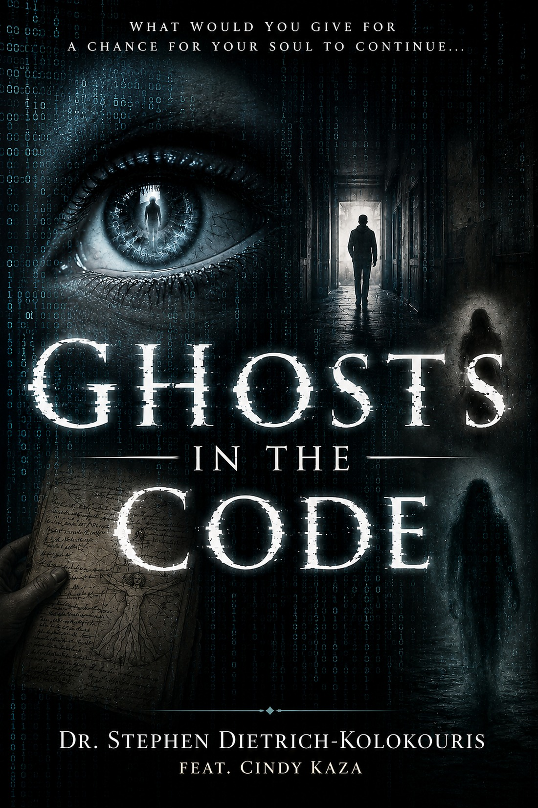
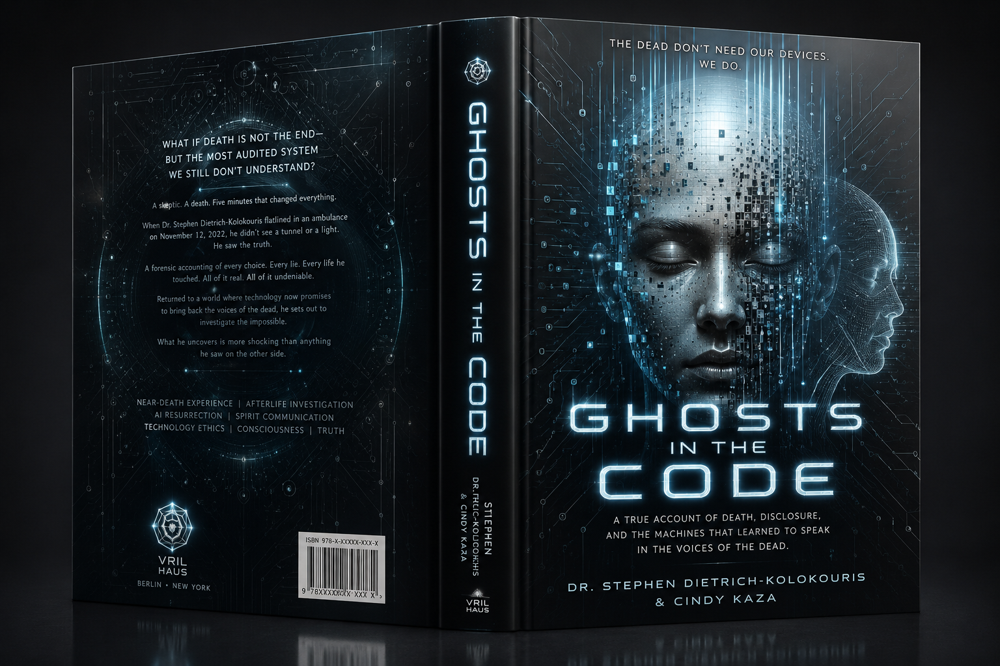

Death
A five-minute cardiac arrest becomes the doorway into the rest of the investigation.
A TRUE ACCOUNT OF DEATH, EVIDENCE & THE MACHINE AGE
What would you give for a chance for your soul to continue...

THE RECORD
A historian and systems investigator dies for five minutes, returns with a moral accounting he cannot dismiss, and follows the evidence trail into haunted rooms, tested mediumship, and the new industry teaching machines to speak in the voices of the dead.
“What survives, what only imitates survival, and how can we tell the difference?”
THE CENTRAL QUESTION
A five-minute cardiac arrest becomes the doorway into the rest of the investigation.
The life review is not presented as comfort. It is moral evidence, felt from the other side of harm.
Haunted rooms, witness logs, empty nights, and the discipline of refusing to turn anomaly into proof too quickly.
AI can imitate presence with frightening tenderness. The book asks what grief will believe when the imitation answers back.

WHY TRUST THE WITNESS?
Before the ambulance, before the void, before the medium and the hotel floor, the reader meets the man who had to be broken open to tell the truth. A child taught not to cry becomes an adult trained to read rooms, systems, motives, and weaknesses.
That sentence becomes the first machine in the book: a family rule, installed in childhood, that produces a man capable of observation without mercy. The death event matters because that man is forced to feel the record he spent fifty years avoiding.
OPEN FILES
The archive is driven from a separate data file. Change one record and the section updates without rewriting the page.
FIELD FILE 11
A downtown hotel. A floor held out of inventory. Solo controls. A protected source. A vocabulary that changes from investigation to search and rescue.
THE DIGITAL SÉANCE
A voice built from data says the thing grief most needs to hear. The danger is not that it lies. The danger is that it can sound sincere.
“The dead in the box are perfectly agreeable.”
Reconstruction. A machine can rebuild a voice from recordings, text, photographs, and behavioral traces.
Simulation. It can answer in a style recognizable enough to feel personal.
Confusion. Fluency can be mistaken for presence, especially when grief supplies the missing certainty.
The question. If survival is real, how do we keep imitation from contaminating the evidence?
THE BOOK AS OBJECT



THE PEOPLE IN THE RECORD

Historian, author, and investigator of claims where memory, testimony, evidence, and the unexplained collide. The book brings historical inquiry and systems thinking to the most personal question imaginable.

Cindy Kaza is featured as a central mediumship presence in the story, connected to the field work, the evidential questions, and the search for what can honestly be known.
MEDIA / PODCASTS / INTERVIEWS
A producer does not need to decode a fake dashboard to understand the pitch. The subjects are direct.
Choose a topic above to pull a concise interview angle.
GHOSTS IN THE CODE / OFFICIAL BOOK SITE
What survives?
Return to the beginning ↑